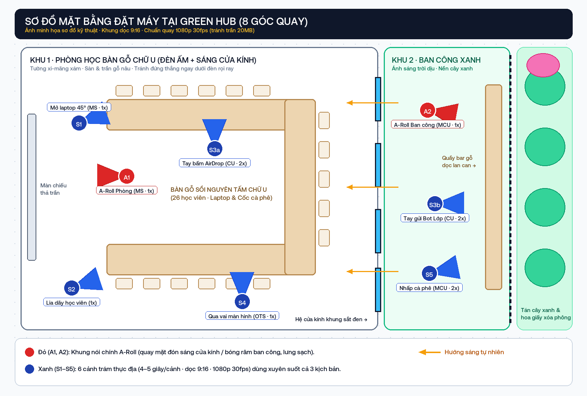
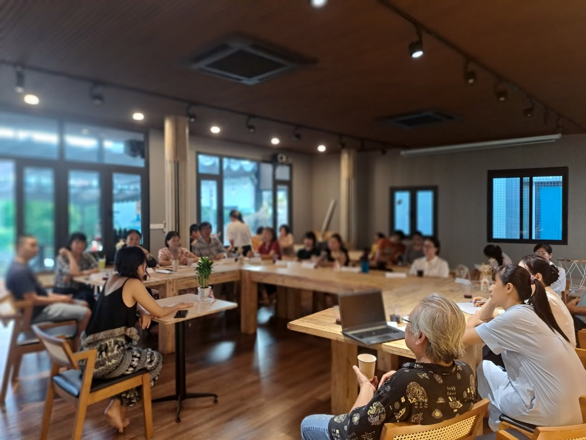
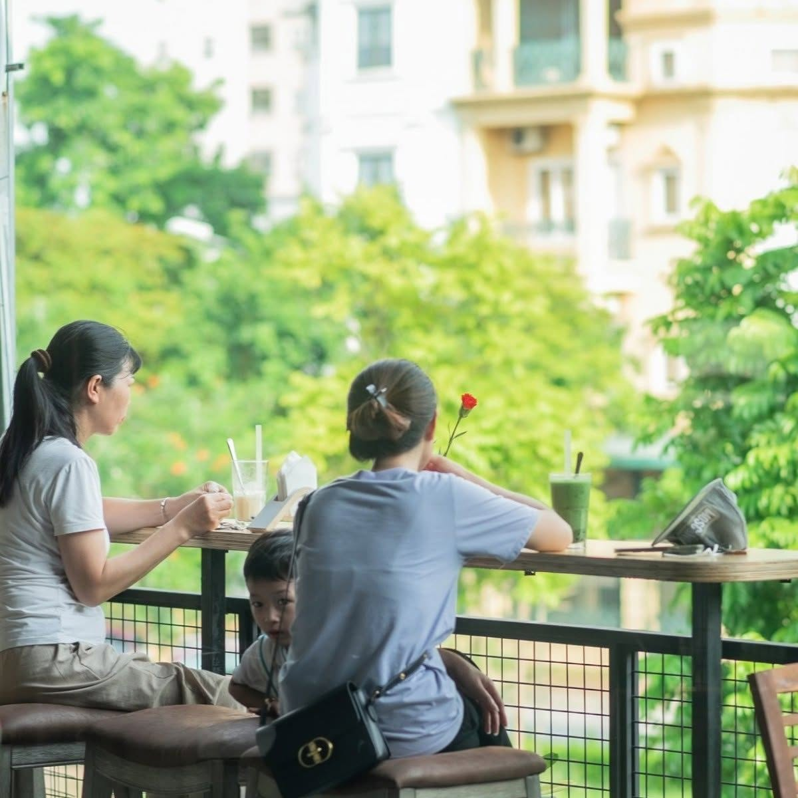
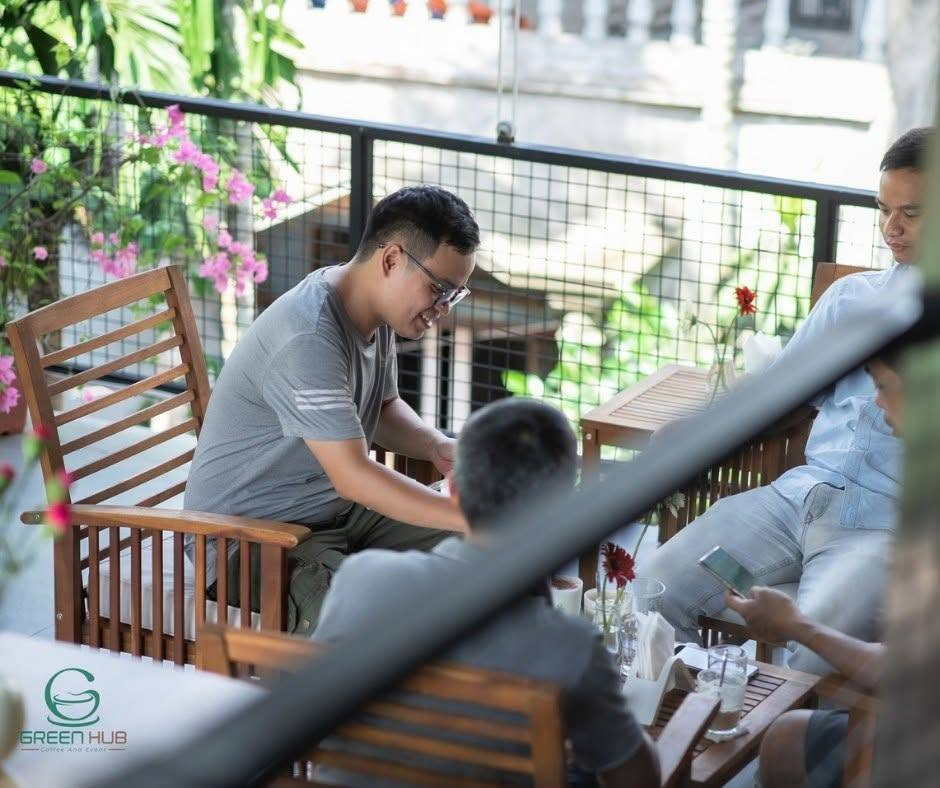
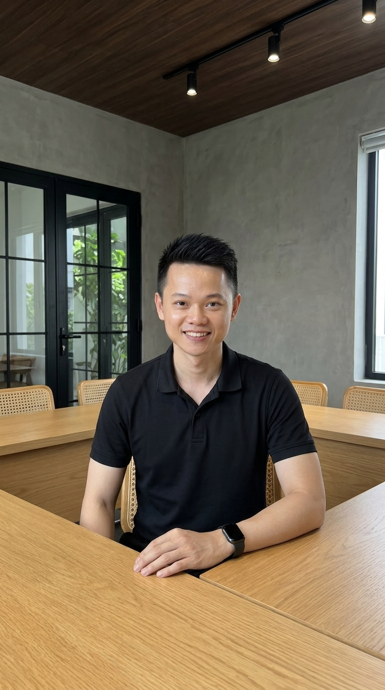
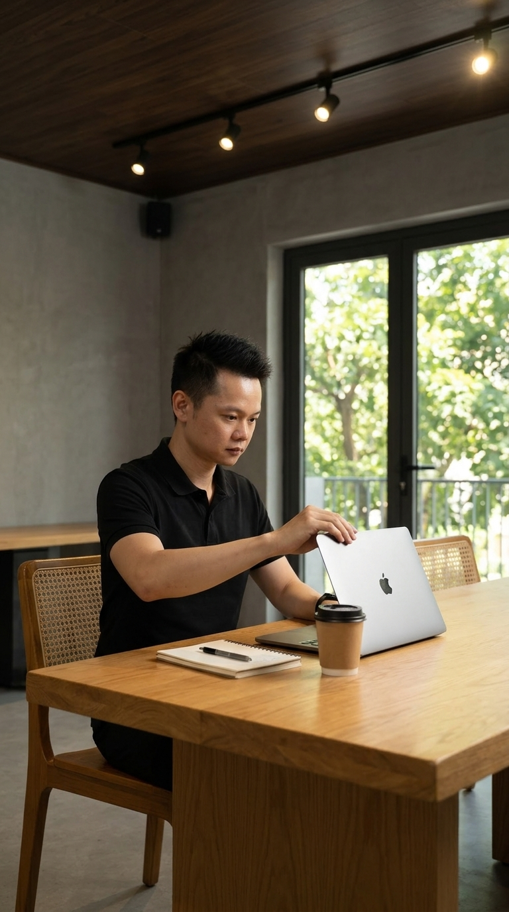
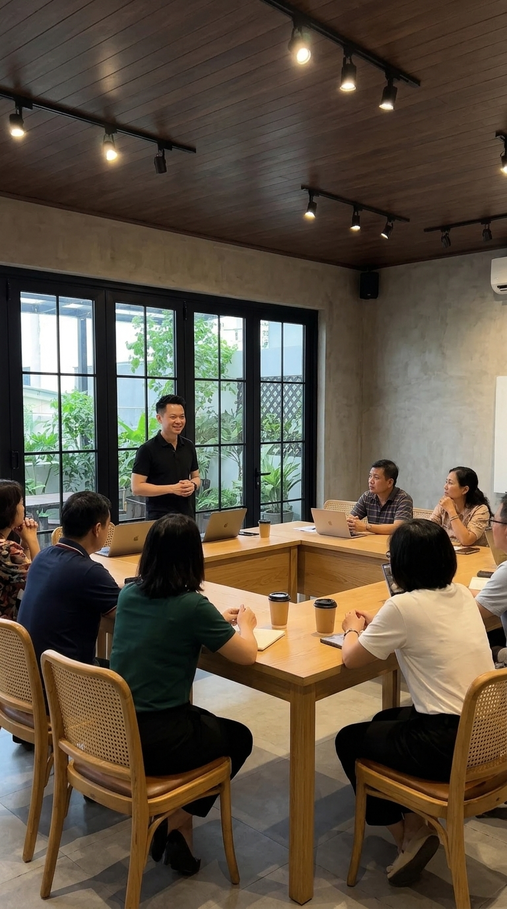
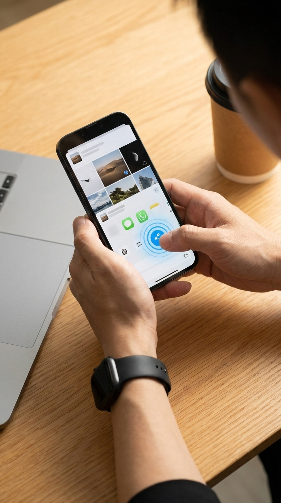
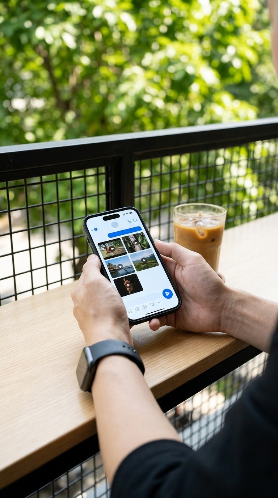
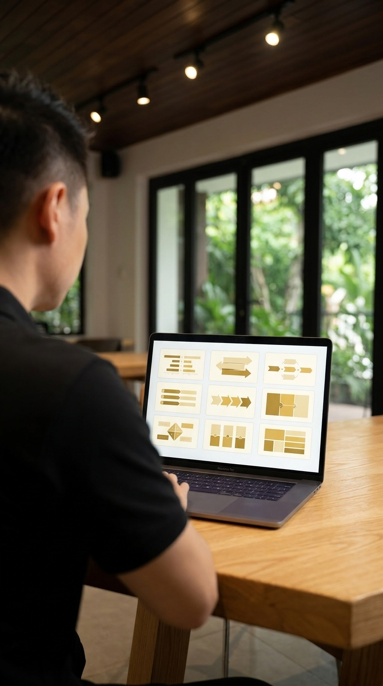

Kịch Bản Mở Màn & 8 Góc Quay Green Hub
Thiết kế màn trình diễn quay thật 30 giây ngay đầu buổi học Offline K4: nhìn bên ngoài các cảnh quay quanh phòng học và ban công tưởng như ngẫu nhiên, nhưng từng câu nói đều đã khóa sẵn 1-1 với sơ đồ chuyển động và cỡ cảnh làm việc.
1. Nhịp Diễn Sân Khấu 5 Mốc (Không Đứng Chờ Máy Dựng)
Để buổi học đầu tiên giữ trọn sự tập trung của cả khán phòng, toàn bộ phần minh họa dựng video bằng AI được chia làm 5 mốc nối tiếp nhau từ sáng tới đầu giờ chiều:
| Mốc giờ | Hoạt động tại lớp | Điều học viên nhìn thấy trực tiếp | Xử lý phía sau máy |
|---|---|---|---|
| TRƯỚC GIỜ HỌC 07:45 sáng |
Quay sẵn bộ 6 cảnh chèn (S1–S5, mỗi cảnh 4–5s) ở chuẩn dọc 9:16 · 1080p 30fps. |
Khi vào lớp, bàn gỗ chữ U và góc ban công vẫn giữ nguyên bố cục đời thường. | Có sẵn 6 clip cảnh phụ sạch rung và 3 bản dựng dự phòng. |
| 09:00 SÁNG Mở màn |
Mời cả lớp giữ yên lặng 30 giây, quay trực tiếp Kịch bản #1 tại phòng + quay luôn 4 giây cảnh S2 lia qua dãy ghế mây học viên đang ngồi. |
Sau ~27 giây AirDrop sang laptop, màn chiếu bật lên Bảng duyệt thẻ vàng. Cả lớp cùng duyệt và đổi thử chữ trên 1 thẻ. | Bấm lệnh kết xuất chạy ngầm (~2 phút 17 giây) trong lúc anh Việt giảng tiếp. |
| 10:15 SÁNG Trước giải lao |
Mở thành phẩm Video #1 ngay trên màn chiếu lớn. | Học viên thấy đoạn nói vừa quay lúc 09:00 nay đã có sơ đồ so sánh, sơ đồ 3 bước, âm thanh cân bằng và thấy chính mình trong cảnh S2. |
Đã vượt tự động 18 cổng kiểm tra khung hình, phụ đề và âm lượng. |
| 10:35 SÁNG Bắc cầu |
Chiếu Kịch bản #3 ngay trước khi giao bài quay đầu tiên cho lớp. | Hiểu ngay quy tắc nhẹ đầu: chỉ thuộc câu đầu và câu cuối (~12s), khúc giữa cầm giấy đọc vì đã có 3 cảnh mở máy, gõ phím, nhấp cà phê che đi. | Chuyển sang Chặng 03: Bài thực hành 30 giây. |
| 11:55 → 13:30 Qua giờ trưa |
Trước bữa trưa, anh Việt ra ban công quay Kịch bản #2, gửi nhiều lượt vào Bot Lớp Riêng trên Telegram rồi đi ăn trưa. | 13:30 đầu buổi chiều mở đúng chiếc điện thoại đó chiếu lên màn hình: video đã tự dựng xong và gửi trả về tin nhắn trong lúc cả lớp nghỉ trưa. | Bot tự gom các lượt gửi, nhận clip dài nhất làm lời nói và tự ghép cảnh chèn. |
2. Ba Kịch Bản ~30 Giây Khóa Chặt Lời Thoại ↔ Sơ Đồ ↔ Cảnh Quay
Cả ba kịch bản dưới đây đều được thiết kế ở ngưỡng 87–91 tiếng (đọc điềm tĩnh hết đúng 28–30 giây), xưng mình – bạn tự nhiên, câu ngắn đọc một hơi không vấp. Điểm mấu chốt nằm ở chỗ: bốn khuôn sơ đồ vàng-kem (compare_sheet, roadmap_sheet, anatomy_sheet, checklist_sheet) luôn sẵn sàng nhận dữ liệu từ chính ý đối lập hoặc liệt kê trong lời nói, không phụ thuộc vào ký hiệu phần trăm dễ bị nhận diện lệch.
| Câu (Tiếng) | Lời thoại anh Việt nói trước lớp | Sơ đồ Motion / Cảnh chèn khớp 1-1 |
|---|---|---|
| CÂU 1 · 14T | Clip này mình vừa quay xong ngay tại bàn học, trước mặt cả lớp. | A-Roll A1 (Trung cảnh · 1x): Nhìn thẳng ống kính, mặt hướng ra cửa kính lấy sáng tự nhiên, lưng tựa tường xi-măng xám. |
| CÂU 2 · 18T | Ngày trước, quay xong là ngồi cả tối cắt ghép, giờ quay xong chỉ cần gửi vào máy. | Sơ đồ compare_sheet (2 cột đối lập):• Cột trái NGÀY TRƯỚC: Ngồi cả tối cắt ghép• Cột phải BÂY GIỜ: Quay xong gửi vào máy |
| CÂU 3 · 15T | Mình chuyển clip sang laptop, máy tự nghe lời mình nói rồi chép ra chữ. | Cảnh chèn S3a (Cận tay · 2x): Ngón cái bấm gửi AirDrop trên iPhone đặt cạnh cốc cà phê giấy; nối nhẹ sang S4 màn hình laptop nếu tách nhịp. |
| CÂU 4 · 25T | Đọc xong, máy chia bài ra từng đoạn, gắn sơ đồ vào chỗ cần giải thích, rồi chèn cảnh làm việc vào chỗ nói dài. | Sơ đồ roadmap_sheet (3 chặng ngang):01 ĐỌC LỜI Chép lời ra chữ → 02 CHIA ĐOẠN Gắn sơ đồ → 03 CHÈN CẢNH Phủ cảnh làm việc |
| CÂU 5 · 17T | Phần của mình chỉ là nói thật một việc mình rành... và duyệt lại trước khi xuất. | A-Roll A1 (Đẩy nhẹ vào Trung cận): Câu kết nối thẳng vào hành động anh Việt mở bảng duyệt vàng trên màn chiếu cùng cả lớp. |
| Câu (Tiếng) | Lời thoại anh Việt nói ngoài ban công | Sơ đồ Motion / Cảnh chèn khớp 1-1 |
|---|---|---|
| CÂU 1 · 16T | Mình đang đứng ngoài ban công, máy tính để trong phòng, không ai ngồi trước máy. | A-Roll A2 (Trung cận · 1x): Đứng cạnh lan can lưới sắt đen ngoài hiên Green Hub, hậu cảnh giàn cây xanh xóa phông dịu. |
| CÂU 2 · 18T | Quay xong, mình gửi clip nói và mấy cảnh phụ vào tin nhắn, gửi nhiều lần cũng được. | Cảnh chèn S3b (Cận tay · 2x): Tay cầm điện thoại trên mặt quầy bar gỗ ngoài hiên bấm chọn lưới clip gửi vào khung chat Bot. |
| CÂU 3 · 19T | Máy trong phòng tự gom lại, nhận ra đâu là lời nói, đâu là cảnh chèn, rồi tự dựng. | Sơ đồ anatomy_sheet (Bóc tách 3 phần):[1] LỜI NÓI Clip dài nhất · [2] CẢNH CHÈN Các clip ngắn · [3] TỰ DỰNG Ghép theo nhịp nói |
| CÂU 4 · 11T | Trong lúc đó, mình ra quầy uống nốt cốc cà phê. (Chừa 2 giây lặng không phụ đề) | Cảnh chèn S5 (Trung cận · 2x): Nâng ly cà phê nhấp nhẹ cạnh lan can cây xanh; 2 giây nghỉ giúp video có nhịp thở tự nhiên. |
| CÂU 5 · 23T | Lát nữa video gửi về đúng cái điện thoại này, cả lớp mình cùng mở ra xem, đúng sai chỗ nào nói luôn. | A-Roll A2 (Trung cận): Nhìn thẳng ống kính chốt hẹn mở xem vào đầu giờ chiều lúc 13:30. |
| Câu (Tiếng) | Lời thoại giải tỏa áp lực ống kính | Sơ đồ Motion / Cảnh chèn khớp 1-1 |
|---|---|---|
| CÂU 1 · 19T | Bài đầu tiên của các bạn sáng nay dài ba mươi giây, và không phải học thuộc cả bài. | A-Roll A1 (Trung cảnh · 1x): Ngồi hoặc đứng đầu bàn gỗ chữ U, nói trực diện giải tỏa tâm lý sợ quên lời. |
| CÂU 2 · 19T | Chỉ thuộc câu đầu và câu cuối để nhìn thẳng vào máy, khúc giữa cầm giấy đọc cũng được. | Sơ đồ checklist_sheet (3 dòng gãy gọn):01 Thuộc câu đầu · 02 Khúc giữa cầm giấy · 03 Thuộc câu cuối |
| CÂU 3 · 18T | Vì lúc đọc, hình đã có cảnh bạn mở laptop, gõ phím, nhấp ngụm cà phê che đi. | Khung broll_bento (Ghép 3 ô cùng lúc): Hiện đồng thời S1 mở máy + S4 gõ phím + S5 nhấp cà phê — đúng 3 cảnh học viên tự quay. |
| CÂU 4 · 18T | Người xem nhìn thấy bạn đang làm việc thật, nên không ai để ý bạn đang cầm giấy. | Cảnh chèn S2 (Trung toàn · 1x): Lia ngang chậm qua dãy bàn gỗ nơi các anh chị học viên đang chăm chú làm bài. |
| CÂU 5 · 17T | Giờ mỗi người lấy điện thoại ra, trả lời bốn câu hỏi, mình làm cùng các bạn. | A-Roll A1 (Trung cận): Kết thúc video là màn chiếu mở thẳng sang 4 câu hỏi sự thật ở Chặng 03. |
3. Bản Đồ Mặt Bằng Đặt Máy & Không Gian Thực Tế Tại Green Hub
Dựa trên kiến trúc thực tế của Green Hub (bàn gỗ sồi ghép chữ U kết hợp ghế mây tre, mảng tường xi-măng xám, trần đèn rọi ray đen, cửa kính trượt lớn thông ra ban công lan can lưới sắt đen và quầy bar gỗ ngoài hiên), toàn bộ 8 vị trí đặt máy chỉ gói gọn trong bán kính 10 bước chân:

A1 trong phòng hướng mặt ra cửa kính tránh bóng đèn rọi hốc mắt, A2 ngoài ban công); màu xanh là 6 cảnh chèn (S1–S5).Ba khu vực kiến trúc thật tại địa điểm tổ chức

A1, S1, S2, S3a và S4. Lưu ý đứng lùi khỏi điểm chiếu thẳng của đèn ray trần.
A2, S3b và S5 (xem thêm 9 cảnh ban công nắng tranh thủ).
4. Danh Mục 8 Khung Hình Cần Quay (Thông Số Cỡ Cảnh · Tiêu Cự · Chuyển Động)
Tất cả các clip đều khóa chung thông số dọc 9:16 · 1080p · 30fps (không bật 4K 60fps để tránh nặng máy và tránh vượt dung lượng khi gửi qua tin nhắn). Tổng số lượng cần quay cho cả buổi mở màn chỉ gồm 2 khung A-Roll + 6 cảnh chèn ngắn (4–5 giây/cảnh). Bộ ảnh dưới đây là ảnh minh họa bố cục khung hình được dựng theo đúng nội thất Green Hub để người cầm máy căn khung nhanh trong 5 giây:

A1 · A-ROLL PHÒNG Ảnh minh họa góc máy
S1 · MỞ LAPTOP Ảnh minh họa góc máy
S2 · LỚP HỌC Ảnh minh họa góc máy
S3a · TAY AIRDROP Ảnh minh họa góc máy
S3b · TAY TELEGRAM Ảnh minh họa góc máy
S4 · QUA VAI MÀN HÌNH Ảnh minh họa góc máy